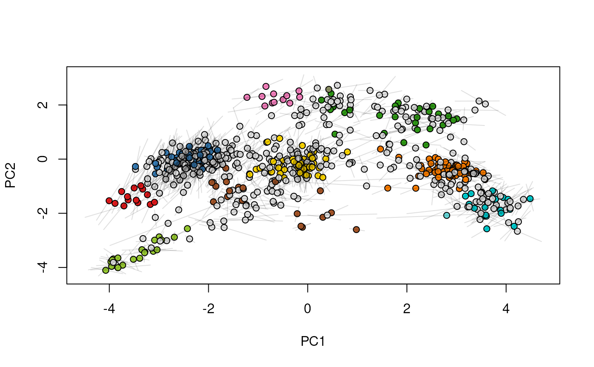
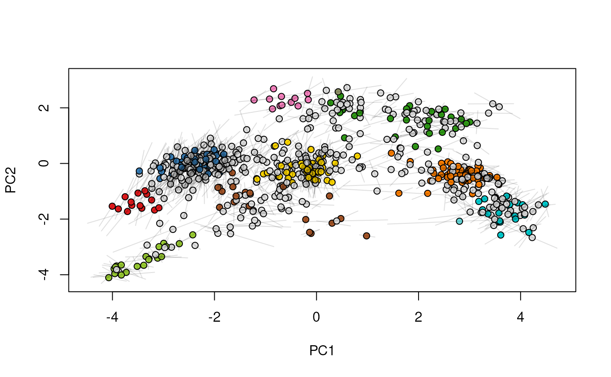
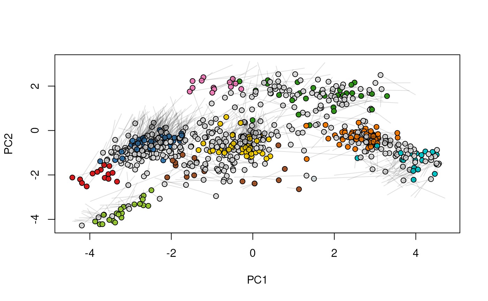
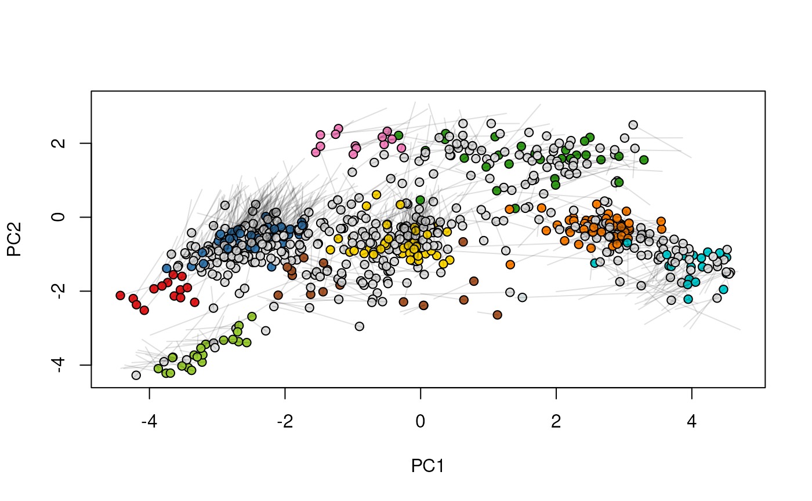
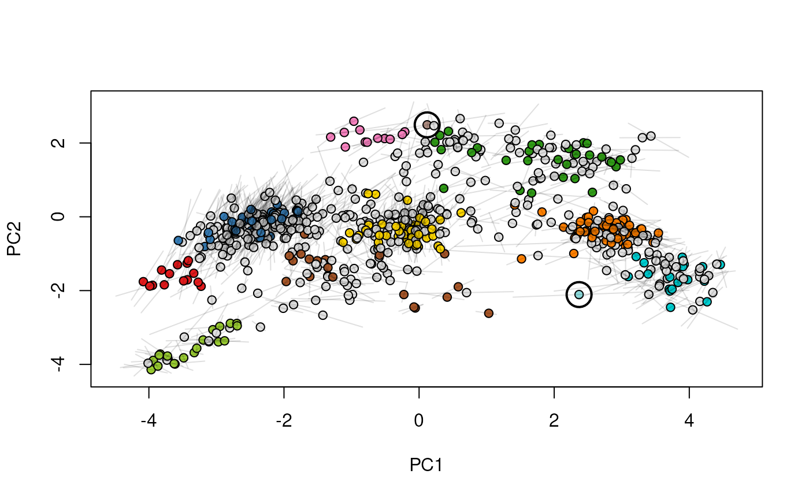
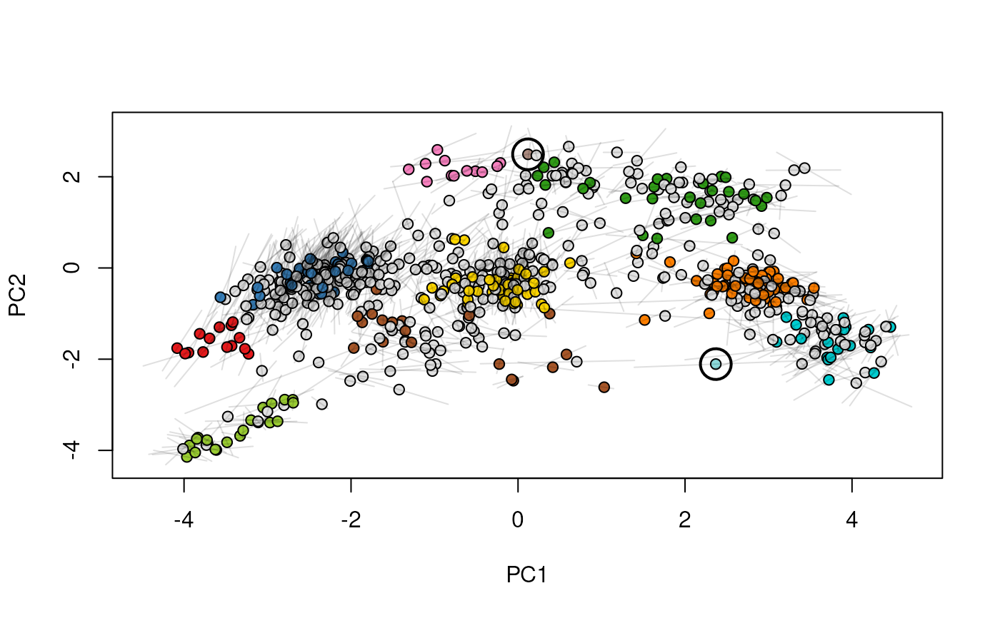
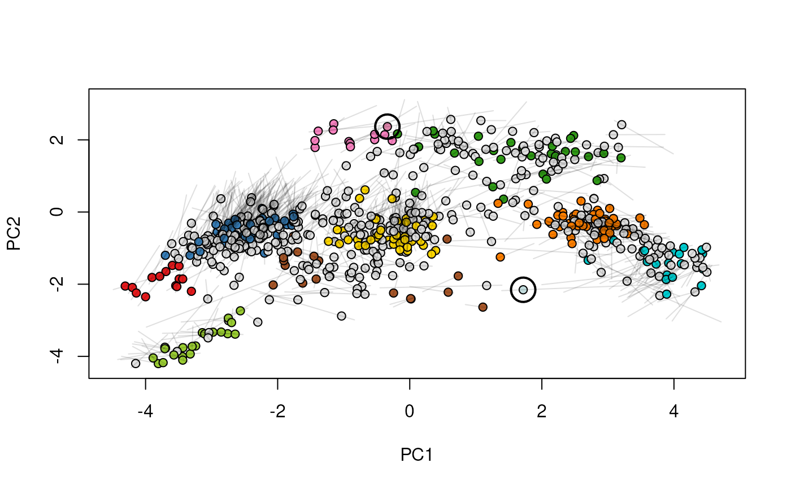
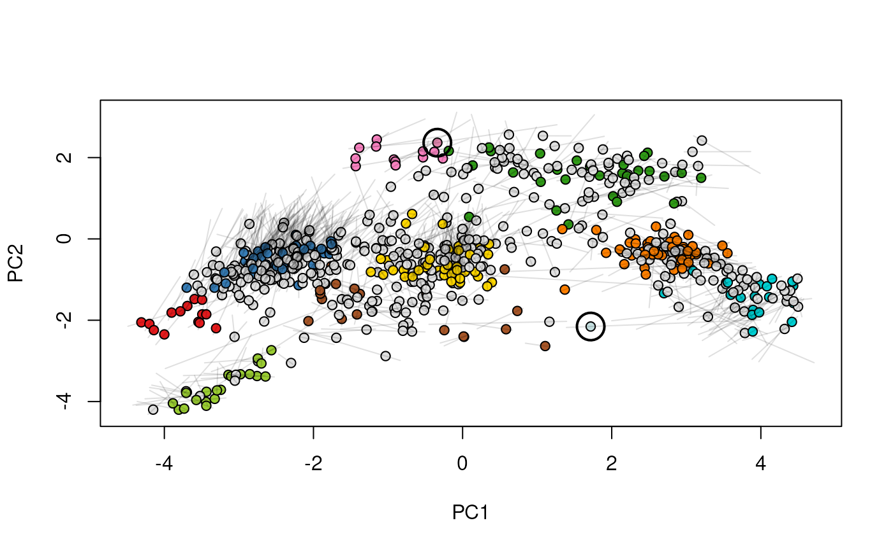

Given two MSnSet instances of one MSnSetList with at
least two items, this function produces an animation that shows
the transition from the first data to the second.
move2Ds(object, pcol, fcol = "markers", n = 25, hl)Arguments
- object
An
linkS4class{MSnSet}or aMSnSetList. In the latter case, only the two first elements of the list will be used for plotting and the others will be silently ignored.- pcol
If
objectis anMSnSet, afactoror the name of a phenotype variable (phenoDataslot) defining how to split the singleMSnSetinto two or more data sets. Ignored ifobjectis aMSnSetList.- fcol
Feature meta-data label (fData column name) defining the groups to be differentiated using different colours. Default is
markers. UseNULLto suppress any colouring.- n
Number of frames, Default is 25.
- hl
An optional instance of class
linkS4class{FeaturesOfInterest}to track features of interest.
Value
Used for its side effect of producing a short animation.
See also
plot2Ds to a single figure with the two
datasets.
Examples
library("pRolocdata")
data(dunkley2006)
## Create a relevant MSnSetList using the dunkley2006 data
xx <- split(dunkley2006, "replicate")
xx1 <- xx[[1]]
xx2 <- xx[[2]]
fData(xx1)$markers[374] <- "Golgi"
fData(xx2)$markers[412] <- "unknown"
xx@x[[1]] <- xx1
xx@x[[2]] <- xx2
## The features we want to track
foi <- FeaturesOfInterest(description = "test",
fnames = featureNames(xx[[1]])[c(374, 412)])
## (1) visualise each experiment separately
par(mfrow = c(2, 1))
plot2D(xx[[1]], main = "condition A")
highlightOnPlot(xx[[1]], foi)
plot2D(xx[[2]], mirrorY = TRUE, main = "condition B")
highlightOnPlot(xx[[2]], foi, args = list(mirrorY = TRUE))
## (2) plot both data on the same plot
par(mfrow = c(1, 1))
tmp <- plot2Ds(xx)
highlightOnPlot(data1(tmp), foi, lwd = 2)
highlightOnPlot(data2(tmp), foi, pch = 5, lwd = 2)
## (3) create an animation
move2Ds(xx, pcol = "replicate")


 



 

 move2Ds(xx, pcol = "replicate", hl = foi)
move2Ds(xx, pcol = "replicate", hl = foi)


 



 
